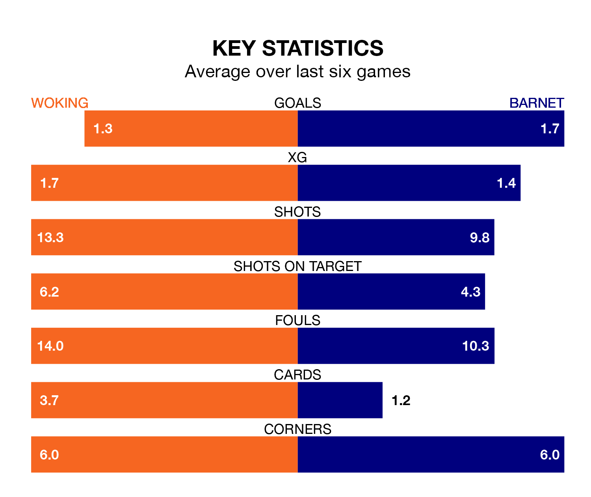

Barnet are strong favourites to take all three points despite Woking's home advantage in Saturday's match at the Laithwaite Community Stadium.
*Betting Company* are offering odds of 2.0 on Barnet sealing the win, with the visitors sitting second in the National League table.
Woking, who are 17th in the league and 24 points behind the Bees, are priced at 3.2 to win. A draw is set at 3.6.
With 41 goals in 39 games so far this season, Woking are the league's second-lowest scorers with 1.1 goals per game. But they are conceding fewer than average too, letting in 49 goals at a rate of 1.3 per game.
Barnet, meanwhile, are above average scorers, with 1.9 goals per game, compared to a league average of 1.5. They have conceded 1.4 goals per game.
In the last 10 years, Woking and Barnet have played each other on 11 occasions. Woking won three of them, Barnet five, and they drew three times.
On average, the Cardinals scored 1.4 goals and the Bees 1.5 in those matches.
Their last meeting was on August 19, when Barnet won 2-0 at home.
The Cardinals are in mixed form in the National League, with three wins and a draw from their last six games.
With four wins and two losses over that period, the Bees's form is slightly better – they have taken 12 points from 18, compared to the hosts' 10.
Woking's last match was on Tuesday, a 2-1 loss against Rochdale, with Charley Kendall getting the goal for the Cardinals.
Barnet beat Rochdale 2-0 last time out, on March 5, with Callum Stead on the scoresheet.
Updated: 15:10 (UTC), 15/03/24